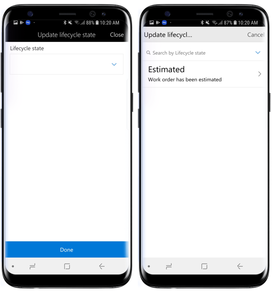
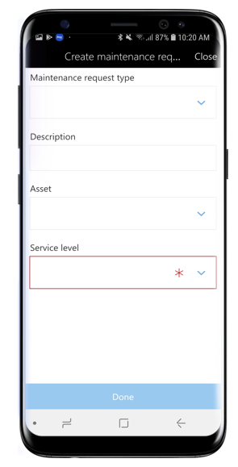

Mobiler Arbeitsbereich für Anlagenverwaltung
Important
Dynamics 365 for Finance and Operations hat sich zu speziell entwickelten Anwendungen entwickelt, mit denen Sie bestimmte Geschäftsfunktionen verwalten können. Weitere Informationen zu diesen Änderungen finden Sie im Dynamics 365-Lizenzierungshandbuch.
Dieses Thema enthält Informationen zum mobilen Arbeitsbereich „Anlageverwaltung“. Mit dem Arbeitsbereich können Benutzer Wartungsanforderungen und Arbeitsaufträge anzeigen und erstellen. Benutzer können auch die zugeordneten Arbeitsauftragseinzelvorgänge in einer Listenansicht anzeigen. Anlagen und funktionale Standorte können auch angezeigt und gesucht werden.
Übersicht
Anlagenverwaltung ist ein erweitertes Modul für die Verwaltung von Anlagen und Arbeitsauftragseinzelvorgänge in Dynamics 365 Supply Chain Management. Der mobile Arbeitsbereich Asset-Management ermöglicht Benutzern, zugewiesene Arbeitsauftragseinzelvorgänge schnell im mobilen Gerät ihrer Wahl anzuzeigen. Benutzer können auch Wartungsanfragen erstellen und verwalten, Lebenszyklusstatus aktualisieren, und Anlagen und funktionale Standortdetail mit ihrem mobilen Gerät anzeigen.
Insbesondere ermöglicht der mobile Arbeitsbereich für die Anlagenverwaltung den Benutzern, die folgenden Aufgaben auszuführen:
- Wartungsanfragen erstellen, anzeigen und bearbeiten, ein Foto machen oder ein vorhandenes Bild an die Wartungsanfrage anhängen, den Lebenszyklusstatus der Wartungsanfrage ändern
- Arbeitsaufträge erstellen, anzeigen und bearbeiten, ein Foto machen oder ein vorhandenes Bild an den Wartungsauftrag anhängen, den Lebenszyklusstatus der Wartungsanfrage ändern, Wartungsauftragseinzelvorgänge anzeigen
- Zugewiesene Arbeitsauftrageinzelaufträge in einer Kalenderansicht anzeigen
- Arbeitsauftragseinzelvorgänge erstellen, anzeigen und bearbeiten, Anlagenzähler aktualisieren, Wartungsprüflisten anzeigen, Notizen zu Arbeitsauftrageinzelvorgängen anzeigen und bearbeiten, die erforderlichen Werkzeuge für den Arbeitsauftrageinzelvorgang anzeigen.
- Bestimmte Anlagen oder funktionale Standorte anzeigen oder suchen
Voraussetzungen
Die Voraussetzungen unterscheiden sich basierend auf der Version von Dynamics 365 Supply Chain Management, die für Ihre Organisation bereitgestellt wurde.
Voraussetzungen, wenn Sie Microsoft Dynamics 365 Supply Chain Management verwenden
Wenn Microsoft Dynamics 365 Supply Chain Management für Ihre Organisation bereitgestellt wurde, muss der Systemadministrator den mobilen Arbeitsbereich Anlagenverwaltung veröffentlichen. Anweisungen finden Sie unter Einen mobilen Arbeitsbereich veröffentlichen.
Herunterladen und Installieren der mobilen App
Laden Sie die mobile App für Dynamics 365 for Unified Operations herunter und installieren Sie diese:
Bei der mobile App anmelden
Starten Sie die App auf Ihrem mobilen Gerät.
Geben Sie die URL Dynamics 365 ein.
Bei der erstmaligen Anwendung werden Sie nach Ihrem Benutzernamen und dem Kennwort gefragt. Geben Sie Ihre Anmeldeinformationen ein.
Nachdem Sie sich angemeldet haben, werden verfügbare Arbeitsbereiche für Ihr Unternehmen angezeigt. Beachten Sie, dass Sie, wenn Ihr Systemadministrator einen neuen Arbeitsbereich später veröffentlicht, die Liste der mobilen Arbeitsbereiche aktualisieren müssen.
Zugewiesene Arbeitsauftrageinzelaufträge in Kalenderansicht anzeigen
Öffnen Sie auf Ihrem mobilen Gerät den Arbeitsbereich für die Anlagenverwaltung.
Wählen Sie Mein Arbeitsauftragseinzelvorgangskalender aus.
Wählen Sie das Datum aus, für das Sie archivierte Arbeitsauftrageinzelvorgänge anzeigen möchten. In der Liste finden Sie die Anlagenkennung und die Kennung des funktionalen Standorts für jeden Arbeitsauftragseinzelvorgang.
Wählen Sie einen Arbeitsauftragseinzelvorgang in der Liste aus, um Detail zum Einzelvorgang anzuzeigen: Details zu Anlage und funktionalem Standort sowie andere Navigationslinks, um Anhänge, Prüflisten, Tools, Anlagenzähler, Notizen, Erfassungen anzuzeigen.

Arbeitsauftrageinzelvorgang erstellen
Öffnen Sie auf Ihrem mobilen Gerät den Arbeitsbereich für die Anlagenverwaltung.
Wählen Sie Alle Wartungsarbeitsaufträge aus.
Wählen Sie den Arbeitsauftrag aus, für den Sie einen neuen Arbeitsauftragseinzelvorgang erstellen möchten.
Wählen Sie die Schaltfläche Position hinzufügen aus.
Wählen Sie die Anlage aus, für die Sie einen Arbeitsauftragseinzelvorgang erstellen möchten.
Wählen Sie Wartungsauftragstyp, Wartungsauftragsartenvariante und Art aus.
Wählen Sie Fertig.
Einem Arbeitsauftragseinzelvorgang einen Anhang hinzufügen
Öffnen Sie auf Ihrem mobilen Gerät den Arbeitsbereich für die Anlagenverwaltung.
Wählen Sie Alle Wartungsarbeitsaufträge aus.
Wählen Sie den Arbeitsauftrag > Arbeitsauftragseinzelvorgang aus, dem Sie einen Anhang hinzufügen möchten.
- Alternativ können Sie auch Mein Arbeitsauftragseinzelvorgangskalender oder Eigene Arbeitsauftragseinzelvorgangsliste auf der Startseite auswählen, um zur Seite Arbeitsauftragseinzelvorgangsdetails zu navigieren.
Wählen Sie Anhänge auf der Seite Arbeitsauftragseinzelvorgangsdetails aus.
Sie finden vorhandene Anhänge im Arbeitsauftragseinzelvorgang. Wählen Sie Anhang hinzufügen aus.
Geben Sie Name und Notizen für dien Anhang ein.
Wählen Sie Bild auswählen aus, um ein Foto aus der mobilen Galerie auszuwählen, oder Foto aufnehmen, um ein Foto zu machen.
Wählen Sie Fertig.
Wartungsprüfliste zu einem Arbeitsauftragseinzelvorgang anzeigen
Öffnen Sie auf Ihrem mobilen Gerät den Arbeitsbereich für die Anlagenverwaltung.
Wählen Sie Alle Wartungsarbeitsaufträge aus.
Wählen Sie den Arbeitsauftrag > Arbeitsauftragseinzelvorgang aus, für den Sie Prüflisten anzeigen möchten.
- Alternativ können Sie auch Mein Arbeitsauftragseinzelvorgangskalender oder Eigene Arbeitsauftragseinzelvorgangsliste auf der Startseite auswählen, um zur Seite Arbeitsauftragseinzelvorgangsdetails zu navigieren.
Wählen Sie Prüflisten auf der Seite Arbeitsauftragseinzelvorgangsdetails aus.
Es wird eine Liste der Prüflistenpositionen angezeigt, die dem Arbeitsauftragseinzelvorgang zugeordnet sind. Wählen Sie eine Prüflistenposition aus, um Anweisungen anzuzeigen und Notizen hinzuzufügen.
Klicken Sie auf die Zurück-Schaltfläche (<), um zur vorherigen Seite zurückzugelangen.

nlagenzähler zu einem Arbeitsauftragseinzelvorgang anzeigen und aktualisieren
Öffnen Sie auf Ihrem mobilen Gerät den Arbeitsbereich für die Anlagenverwaltung.
Wählen Sie Alle Wartungsarbeitsaufträge aus.
Wählen Sie den Arbeitsauftrag > Arbeitsauftragseinzelvorgang aus, für den Sie Anlagenzähler anzeigen möchten.
- Alternativ können Sie auch Mein Arbeitsauftragseinzelvorgangskalender oder Eigene Arbeitsauftragseinzelvorgangsliste auf der Startseite auswählen, um zur Seite Arbeitsauftragseinzelvorgangsdetails zu navigieren.
Wählen Sie Anlagenzähler auf der Seite Arbeitsauftragseinzelvorgangsdetails aus.
Es wird eine Liste der Anlagenzähler angezeigt, die dem Arbeitsauftragseinzelvorgang zugeordnet sind. Wählen Sie das Bleistiftsymbol in einer Anlagenzählerposition aus, um den Gegenwert zu aktualisieren.
Geben Sie einen neuen Gegenwert ein, und wählen Sie Fertig aus.

Verbrauch in einem Arbeitsauftragseinzelvorgang erfassen
Öffnen Sie auf Ihrem mobilen Gerät den Arbeitsbereich für die Anlagenverwaltung.
Wählen Sie Alle Wartungsarbeitsaufträge aus.
Wählen Sie den Arbeitsauftrag > Arbeitsauftragseinzelvorgang aus, für den Sie Verbrauchserfassungen hinzufügen möchten.
- Alternativ können Sie auch Mein Arbeitsauftragseinzelvorgangskalender oder Eigene Arbeitsauftragseinzelvorgangsliste auf der Startseite auswählen, um zur Seite Arbeitsauftragseinzelvorgangsdetails zu navigieren.
Wählen Sie Erfassungen auf der Seite Arbeitsauftragseinzelvorgangsdetails aus.
Wählen Sie Stunden hinzufügen aus, um Arbeitsstundenerfassungen zu erstellen.
- Wählen Sie aus der Suche die Kategorie aus.
- Geben Sie im Feld Stunden die Anzahl der Arbeitsstunden ein, die für den Arbeitsauftragseinzelvorgang aufgewendet wurden.
- Wählen Sie die geeignete Positionseigenschaft aus.
- Wählen Sie Fertig.
Wählen Sie Artikel hinzufügen aus, um Artikelerfassungen zu erstellen.
- Wählen Sie die Artikelnummer aus der Suche aus.
- Wählen Sie den Standort aus der Suche aus.
- Geben Sie die Menge der verbrauchten Artikel an.
- Wählen Sie Fertig.
Wählen Sie Ausgaben hinzufügen aus, um Ausgabenerfassungen zu erstellen.
- Wählen Sie aus der Suche die Kategorie aus.
- Geben Sie die Menge für die Ausgabenerfassung ein.
- Wählen Sie Verkaufswährung aus der Suche aus.
- Geben Sie den Einstandspreis für die Ausgabenerfassung ein.
- Wählen Sie Fertig.

Lebenszyklusstatus eines Arbeitsauftrags aktualisieren
Öffnen Sie auf Ihrem mobilen Gerät den Arbeitsbereich für die Anlagenverwaltung.
Wählen Sie Alle Wartungsarbeitsaufträge aus.
Wählen Sie den Arbeitsauftrag aus, für den Sie den Lebenszyklusstatus aktualisieren möchten.
Wählen Sie die Schaltfläche Status aktualisieren am unteren Bildschirmrand aus.
Wählen Sie einen neuen Lebenszyklusstatus aus der Liste aus.
Wählen Sie Fertig.

Eine Wartungsanfrage erstellen
Öffnen Sie auf Ihrem mobilen Gerät den Arbeitsbereich für die Anlagenverwaltung.
Wählen Sie Alle Wartungsanfragen aus.
Wählen Sie am unteren Bildschirmrand Aktivitäten und dann Wartungsanfrage erstellen aus.
Wenn für Wartungsanfragen in Anlagenverwaltung Nummernkreis aktiviert ist, wird das Feld Wartungsanfrage ausgeblendet, da es automatisch aufgefüllt wird. Wenn das Feld Wartungsanfrage angezeigt wird, geben Sie eine Wartungsanfragenkennung ein.
Wählen Sie einen Wartungsanfragetyp aus.
Geben Sie eine Beschreibung für die Wartungsanfrage ein.
Wählen Sie die Anlage aus, für die Sie eine Anfrage erstellen möchten.
Wählen Sie die Leistungsebene für die Wartungsanfrage aus.
Wählen Sie Fertig.

Einer Wartungsanforderung einen Anhang hinzufügen
Öffnen Sie auf Ihrem mobilen Gerät den Arbeitsbereich für die Anlagenverwaltung.
Wählen Sie Alle Wartungsanfragen aus.
Wählen Sie die Wartungsanfrage aus, der Sie einen Anhang hinzufügen möchten.
Wählen Sie Anhänge am unteren Bildschirmrand aus.
Wählen Sie Anhänge hinzufügen aus.
Geben Sie Name und Notizen für dien Anhang ein.
Wählen Sie Bild auswählen aus, um ein Foto aus der mobilen Galerie auszuwählen, oder Foto aufnehmen, um ein Foto zu machen.
Wählen Sie Fertig.